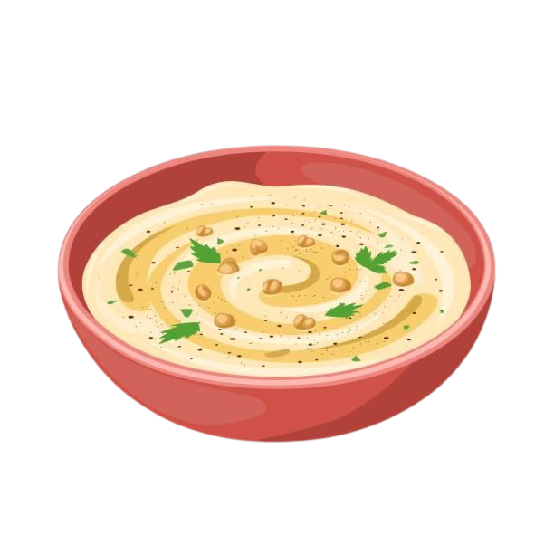

Hummus Recipe
A creamy dip made from chickpeas, tahini, lemon, and garlic.
Ingredients
- 1 can (15 oz) chickpeas (garbanzo beans), drained and rinsed
- 1/4 cup tahini (sesame seed paste)
- 2 tablespoons olive oil (plus extra for drizzling)
- 2 tablespoons lemon juice (freshly squeezed)
- 1-2 cloves garlic, minced
- 1/2 teaspoon ground cumin
- Salt to taste (about 1/2 teaspoon)
- 2-3 tablespoons water (or more for desired consistency)
- Fresh parsley (for garnish, optional)
- Paprika (for garnish, optional)
- Pine nuts or sesame seeds (optional, for garnish)
Preparation Time
- Prep time: 10 minutes
- Total time: ~10 minutes
Instructions
- Prepare the Ingredients:
- Drain and rinse the chickpeas well under cold water. If you want a smoother hummus, you can peel the skins off the chickpeas, though this is optional.
- Mince the garlic and prepare the tahini, olive oil, and lemon juice.
- Blend the Hummus:
- In a food processor, combine the chickpeas, tahini, olive oil, lemon juice, minced garlic, ground cumin, and salt.
- Blend until smooth. If the hummus is too thick or lumpy, add 2-3 tablespoons of water, a little at a time, until you reach your desired consistency. Continue to blend until the mixture is creamy.
- Taste and Adjust:
- Taste the hummus and adjust seasoning if necessary. You can add more salt, lemon juice, or cumin to suit your taste.
- Serve:
- Transfer the hummus to a serving bowl. Drizzle with a little extra olive oil and garnish with fresh parsley, paprika, and pine nuts or sesame seeds if desired.
Enjoy the creamy, savory goodness of hummus with pita bread, vegetables, or as a spread for sandwiches and wraps. It's vegan, healthy, and delicious!